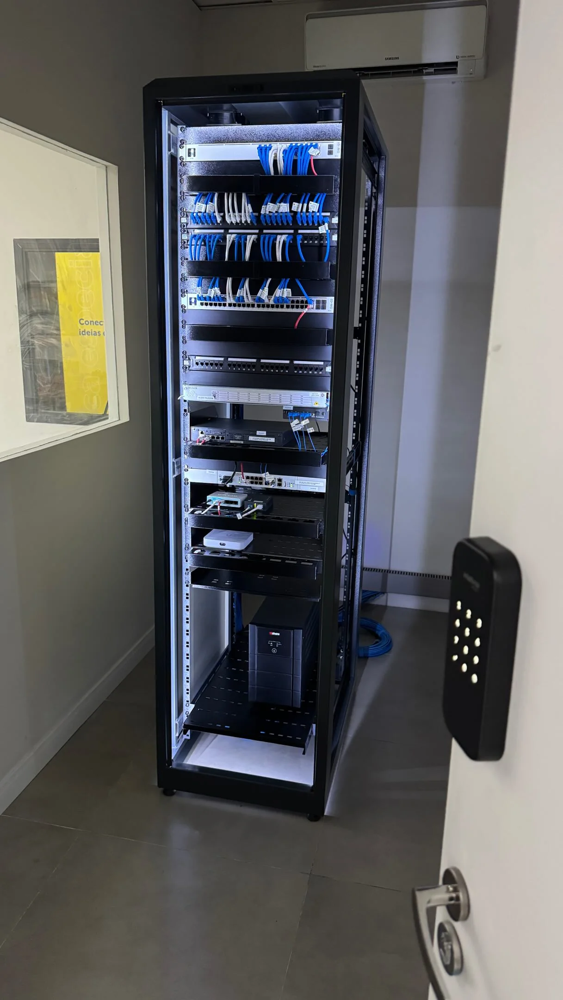

O que nos move
Missão
Oferecer soluções tecnológicas adequadas a cada necessidade, buscando agilidade e satisfação constante de nossos clientes.
Sobre a Microgate
A Microgate IT Solutions ajuda empresas de diferentes portes a usar a tecnologia com mais tranquilidade.

Nossa empresa
Nossa equipe oferece atendimento personalizado e soluções alinhadas às necessidades de cada cliente.
Com o apoio de colaboradores e parceiros, trabalhamos para manter a tecnologia funcionando e apoiar o crescimento dos negócios com agilidade, profissionalismo e preços competitivos.
O que fazemos
Serviços para manter sua empresa conectada, produtiva e segura.
O que nos move
Oferecer soluções tecnológicas adequadas a cada necessidade, buscando agilidade e satisfação constante de nossos clientes.
Para onde olhamos
Ser referência em atendimento personalizado e suporte técnico descomplicado em toda a região.
Conte com a Microgate
Fale com a Microgate sobre as necessidades da sua empresa.